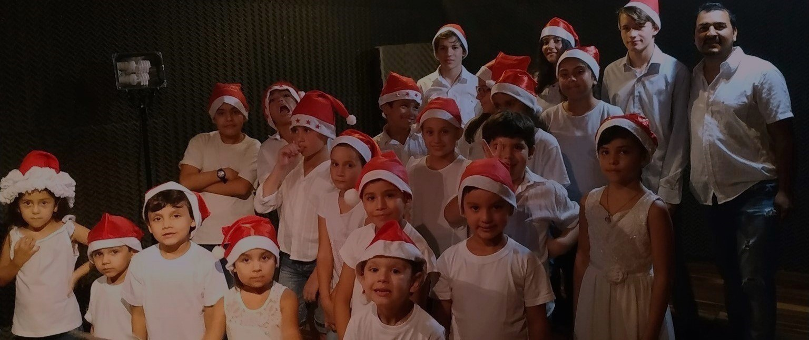
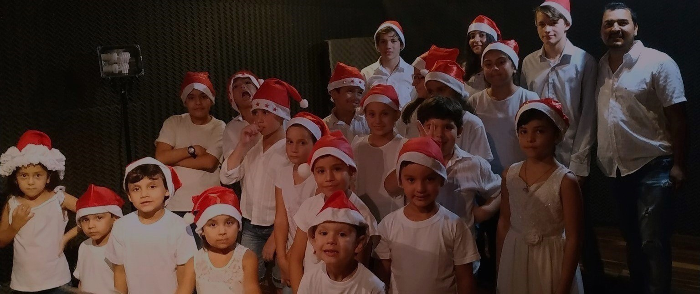

¡Un Multiespacio para Pequeños Artistas!
JuaDel ofrece un lugar único para los niños, donde pueden explorar su creatividad y disfrutar de una variedad amplia de actividades, desde música hasta cuidado infantil. ¡Todo en un solo lugar!
JuaDel ofrece un lugar único para los niños, donde pueden explorar su creatividad y disfrutar de una variedad amplia de actividades, desde música hasta cuidado infantil. ¡Todo en un solo lugar!
JuaDel es un multiespacio para el aprendizaje musical, la fotografía, la terapia musical y el cuidado de niños, en sus ambientes adecuados para cada función. A disposición de la ciudadanía en efecto de mejorar la calidad de vida de los que asisten.
Clases de instrumentos y canto diseñadas para niños, fomentando su talento musical.
Sesiones de terapia a través de la música para estimular el bienestar y la expresión emocional.
Captura los momentos más especiales con sesiones de fotos personalizadas para niños y familias.
Un espacio seguro y divertido para el cuidado de los más pequeños, con actividades recreativas.
La música estimula áreas del cerebro asociadas con la lectura, las matemáticas y el desarrollo emocional.

Fomenta la empatía, el trabajo en equipo, la comunicación y el respeto hacia los demás.